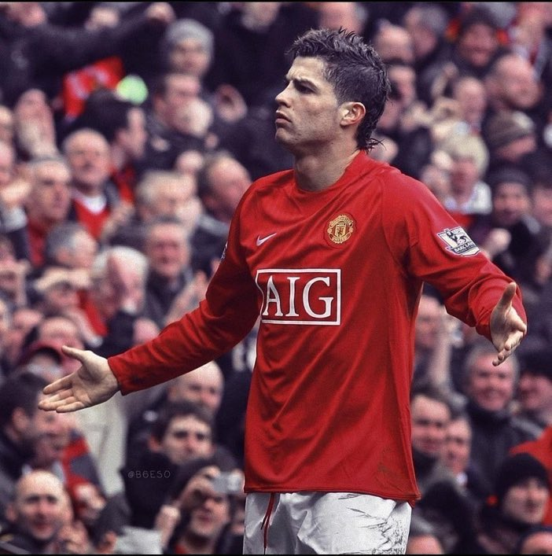

Cristiano Ronaldo
Biografia de Cristiano Ronaldo
Cristiano Ronaldo dos Santos Aveiro nasceu no dia 5 de fevereiro de 1985, na cidade de Funchal, na ilha da Madeira, Portugal. Ele é o filho mais novo de Maria Dolores dos Santos Aveiro e José Dinis Aveiro. Desde muito jovem, Ronaldo demonstrou uma habilidade excepcional no futebol. Sua paixão pelo esporte era evidente, e sua mãe, apesar de suas dificuldades financeiras, sempre o apoiou em sua jornada.
Ronaldo cresceu em um bairro humilde, e a sua determinação e foco em se tornar jogador profissional o levaram a ultrapassar obstáculos significativos. Aos 8 anos, começou a jogar futebol no Andorinha, seu primeiro clube, onde foi incentivado pelo seu pai. Aos 12 anos, ele se mudou para Lisboa para treinar nas categorias de base do Sporting Clube de Portugal, um dos clubes mais prestigiados de Portugal. Lá, Ronaldo enfrentou desafios, como viver longe de sua família, mas sua habilidade em campo rapidamente se destacou.
Em 2003, com apenas 18 anos, Ronaldo foi contratado pelo Manchester United, um dos maiores clubes de futebol do mundo. Sob a liderança do técnico Sir Alex Ferguson, Ronaldo passou de uma promessa jovem a uma superestrela mundial. Durante sua primeira temporada, ele se destacou por sua velocidade, dribles e habilidades técnicas, além de melhorar significativamente seu jogo. Ele rapidamente se tornou uma peça-chave no time e ajudou o Manchester United a conquistar três títulos da Premier League e uma Liga dos Campeões da UEFA em 2008. Foi também em 2008 que ele ganhou seu primeiro Ballon d'Or, consolidando sua posição como o melhor jogador de futebol do mundo.
Em 2009, Ronaldo fez uma transferência histórica para o Real Madrid por 94 milhões de euros, um valor recorde na época. No Real Madrid, Ronaldo viveu o auge de sua carreira. Durante sua passagem, ele se tornou o maior artilheiro da história do clube, com mais de 450 gols marcados. O craque português levou o time a conquistar quatro Ligas dos Campeões da UEFA e dois campeonatos espanhóis. Seu número impressionante de gols, sua habilidade em jogos decisivos e seu trabalho incansável em campo lhe garantiram mais quatro Ballon d'Ors (2013, 2014, 2016, 2017), além de vários outros prêmios individuais e coletivos.
Ronaldo também fez história na seleção portuguesa. Em 2016, ele liderou Portugal para sua primeira vitória em um grande torneio internacional, conquistando a Eurocopa 2016. Sua participação foi fundamental, e, apesar de se lesionar na final, ele permaneceu à beira do campo, motivando seus companheiros. Em 2019, ele também ajudou Portugal a conquistar a Liga das Nações da UEFA, reforçando seu legado como um dos maiores jogadores de seleções da história.
Após nove anos de sucesso no Real Madrid, Ronaldo se transferiu para a Juventus em 2018. No clube italiano, continuou a quebrar recordes e conquistou dois títulos da Série A, demonstrando sua incrível adaptação e longevidade. Ele também manteve seu nível altíssimo de desempenho, sendo o principal goleador da equipe e mantendo-se entre os melhores jogadores da Europa.
Em 2021, Ronaldo fez um retorno triunfante ao Manchester United, sua primeira casa no futebol europeu. Mesmo em sua fase mais madura, ele continuou a marcar gols e a se destacar como um dos principais jogadores da equipe. Sua presença no clube e seu retorno ao Campeonato Inglês reforçaram ainda mais seu nome na história do futebol mundial.
Além de seu sucesso no futebol de clubes, Cristiano Ronaldo tem sido uma das maiores figuras da história das seleções. Com mais de 120 gols, ele é o maior artilheiro da história das seleções de futebol e quebrou diversos recordes durante sua carreira. Sua determinação e liderança têm sido uma inspiração para jovens atletas em todo o mundo.
Fora dos campos, Cristiano Ronaldo tem sido um exemplo de compromisso com sua preparação física. Ele segue uma dieta rigorosa e um regime de treinamento intenso para manter seu corpo em excelente forma, o que o permite continuar jogando no mais alto nível, mesmo após seus 30 anos. Seu estilo de vida saudável e seu trabalho incessante para se manter no topo o tornaram uma referência mundial de superação e disciplina.
Ronaldo também é muito conhecido por seu trabalho filantrópico. Ele tem feito várias doações significativas para hospitais e causas de saúde, educação e crianças carentes. Em 2015, ele foi nomeado embaixador da UNICEF, e ele frequentemente participa de campanhas de arrecadação de fundos para ajudar pessoas necessitadas ao redor do mundo. Ele também tem uma fundação própria, a CR7 Foundation, que se dedica a causas humanitárias.
Nas redes sociais, Ronaldo é um dos atletas mais seguidos e influentes do mundo. Com mais de 650 milhões de seguidores no Instagram, ele usa sua plataforma para compartilhar não apenas sua vida pessoal, mas também promover sua imagem de empresário e sua linha de produtos CR7, que inclui roupas, fragrâncias e outros itens de marca. Sua presença digital é um reflexo de sua popularidade global e sua habilidade em se conectar com fãs de todas as idades e de todas as partes do mundo.
Em resumo, Cristiano Ronaldo não é apenas um dos maiores jogadores de futebol da história, mas também um ícone global que representa a determinação, o trabalho árduo e a excelência. Sua jornada de vida é uma fonte de inspiração para milhões de pessoas, e sua legacidade transcende os limites do esporte.
Clubes onde Cristiano Ronaldo jogou
-
Sporting CP (2002–2003)

Sobre o Sporting CP
O Sporting CP é um dos maiores clubes de Portugal, conhecido por sua academia de formação e grande história no futebol português. Cristiano Ronaldo iniciou sua carreira no clube antes de se transferir para o Manchester United, começando sua jornada internacional.
-
Manchester United (2003–2009)

Sobre o Manchester United
O Manchester United foi onde Cristiano Ronaldo se destacou no futebol internacional, ganhando inúmeros títulos, incluindo a Liga dos Campeões. Ele se tornou um dos melhores jogadores do mundo durante sua passagem pelo clube inglês.
-
Real Madrid (2009–2018)
Sobre o Real Madrid
O Real Madrid foi o clube onde Cristiano Ronaldo alcançou o auge de sua carreira, conquistando múltiplos títulos de Liga dos Campeões e se tornando o maior goleador da história do clube.
-
Juventus (2018–2021)
Sobre a Juventus
A Juventus foi o clube onde Cristiano Ronaldo teve uma experiência bem-sucedida no futebol italiano, ajudando o time a conquistar títulos da Série A e a ganhar destaque na Europa.
-
Manchester United (2021–2022)
Sobre o Manchester United (segunda passagem)
Após um retorno triunfante ao Manchester United, Cristiano Ronaldo continuou sua trajetória, mas teve desafios para alcançar o sucesso desejado, resultando em sua saída do clube.
-
Al Nassr (2023–presente)
Sobre o Al Nassr
O Al Nassr é um dos maiores clubes da Arábia Saudita. Ronaldo se transferiu para o clube no final de sua carreira na Europa, marcando um novo capítulo em sua trajetória internacional.
Estatísticas de Cristiano Ronaldo
| Ano | Competição | Liga | Clube | Jogos | Gols | Assistências | Cartões | Tempo Jogado |
|---|